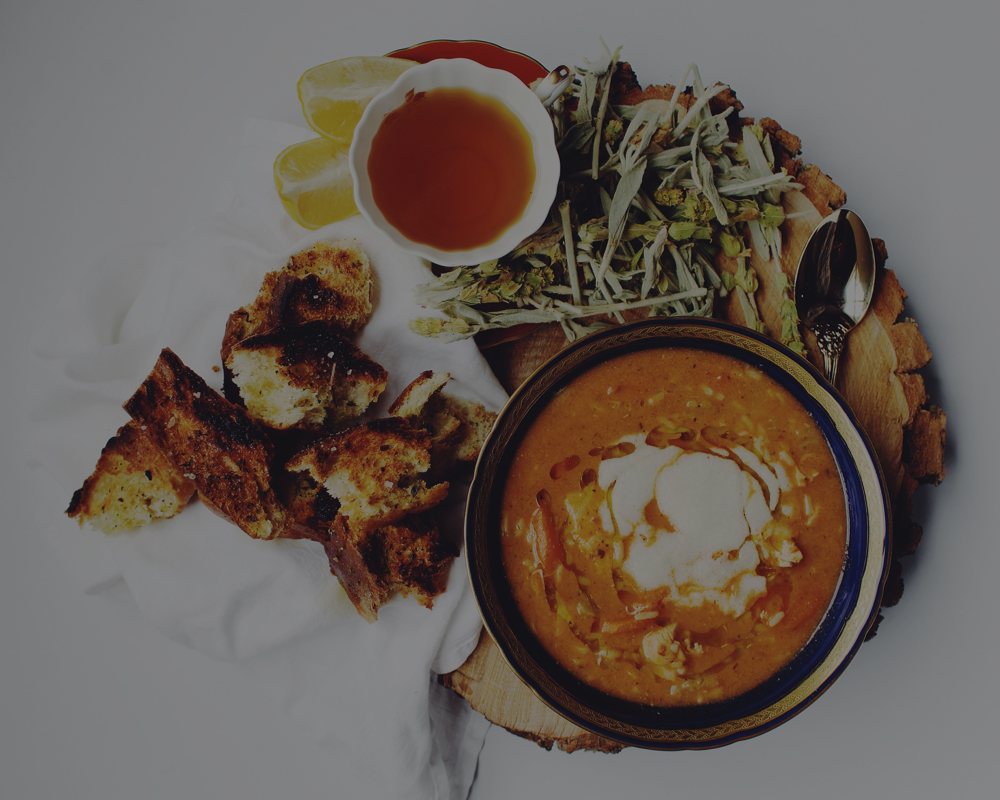
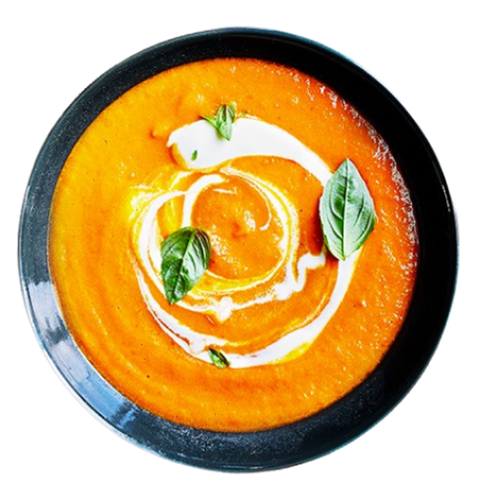

French Onion Soup

We have been trying French onion soup in restaurants for years and my family and friends agree none can compare to my recipe for taste and simplicity of preparation.

We have been trying French onion soup in restaurants for years and my family and friends agree none can compare to my recipe for taste and simplicity of preparation.